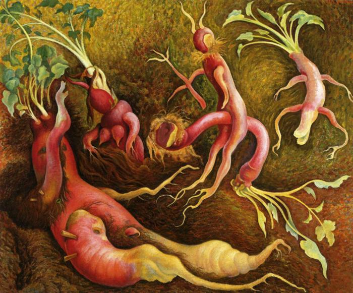

Tags: nan
Style: Surrealism
Artist: Rivera Diego
Title: The Tenptations of Saint Antony
Year: 1947
Genre: allegorical painting
Categories: sea_anemone (30.4%); sea_slug (13.8%); book_jacket (10.6%); flatworm (8.5%); flamingo (5.8%)
Similar Images: